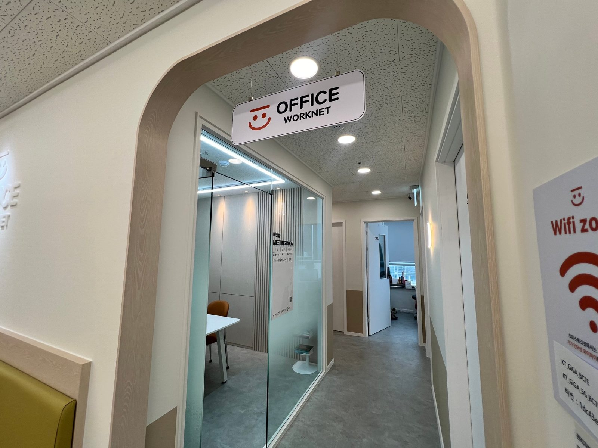
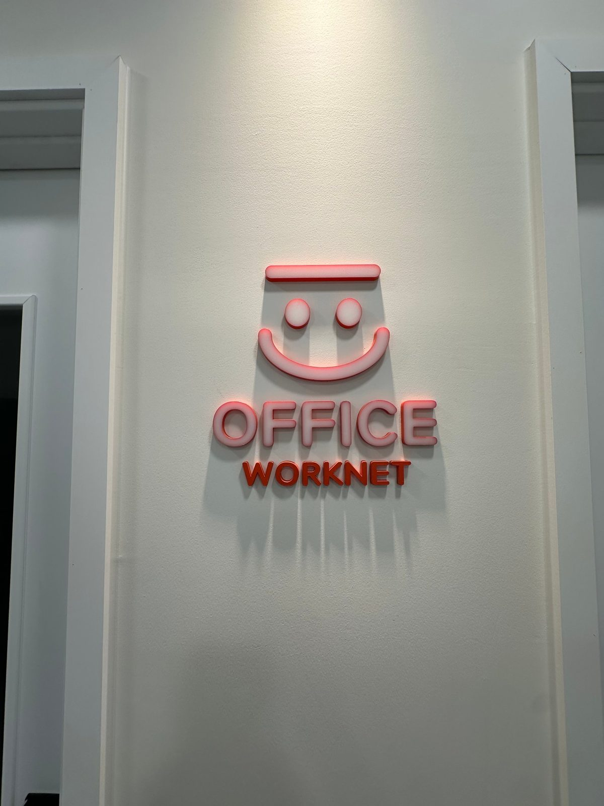

강동구 비상주사무실, 사업자등록 주소로 써도 되는지 계약 전에 확인할 6가지
온라인 쇼핑몰, 스마트스토어, 프리랜서 디자인, 1인 법인. 사업자등록은 해야 하는데 집 주소를 쓰자니 사업자등록증과 통신판매업 신고 정보에 집 주소가 그대로 나갑니다. 그래서 "강동구 비상주사무실"을 검색하시는 분이 많습니다. 이 글은 비상주사무실을 처음 알아보는 분이 계약 전에 꼭 확인해야 할 여섯 가지를 운영자 입장에서 정리한 것입니다.
1. 비상주사무실 주소로 사업자등록이 되는가
됩니다. 비상주사무실은 실제로 존재하는 사무실의 주소를 사업자등록·법인설립용으로 임대하는 서비스이고, 계약하면 임대차계약서가 나옵니다. 홈택스에서 사업자등록을 신청할 때 이 계약서를 첨부하면 됩니다. 강동구 주소로 등록하면 관할은 강동세무서가 됩니다.
다만 업종에 따라 다릅니다. 통신판매, 소프트웨어 개발, 디자인, 컨설팅, 광고대행, 무역처럼 사무 공간만 있으면 되는 업종은 문제가 없습니다. 반대로 음식점, 제조, 학원, 미용처럼 영업 장소 자체가 허가 요건인 업종은 비상주 주소로 등록할 수 없습니다. 애매한 업종이면 계약 전에 관할 세무서에 업종 코드로 한 번 물어보는 것이 가장 정확합니다.

2. 우편물과 등기는 어떻게 받는가
사업자등록을 하면 세무서 안내문, 국민연금·건강보험 고지서, 거래처 서류, 등기우편이 그 주소로 옵니다. 비상주사무실을 고를 때 가장 많이 놓치는 부분이 여기입니다. 우편물이 도착하면 알려주는지, 등기를 대신 받아주는지, 직접 찾으러 와야 하는지 계약 전에 물어보세요. 오피스워크넷 고덕강일점은 우편물·등기우편을 받은 뒤 도착 알림을 드리고, 방문해서 찾아가시면 됩니다.
3. 요금은 개인과 법인이 다르다
대부분의 비상주사무실은 개인사업자와 법인 요금이 다르고, 계약 기간이 길수록 월 단가가 내려갑니다. 오피스워크넷 고덕강일점 기준은 아래와 같습니다. (부가세 별도)
| 계약 기간 | 개인 (월) | 법인 (월) |
|---|---|---|
| 1년 | 20,000원 | 30,000원 |
| 6개월 | 30,000원 | 40,000원 |
| 3개월 | 40,000원 | 50,000원 |
사업자등록은 한번 하면 주소를 자주 바꾸지 않습니다. 주소를 바꿀 때마다 사업자등록 정정, 통신판매업 변경 신고, 거래처 안내가 따라오기 때문입니다. 그래서 처음부터 1년으로 계약하는 분이 가장 많습니다.
4. 계약에 필요한 것
개인사업자는 신분증 사본, 법인은 법인 등기부등본이면 됩니다. 아직 법인 설립 전이라면 설립 등기용 본점 주소로 먼저 임대차계약서를 받고, 등기가 끝난 뒤 등본을 보내주시면 됩니다. 방문 없이 톡톡으로 서류를 주고받고 입금하면 당일 계약서를 받을 수 있습니다.
5. 계약서에 적힌 금액이 월세와 다를 때
비상주 임대차계약서에는 보통 계약 기간 전체의 총액이 적힙니다. 예를 들어 개인 1년 계약이면 월 2만원이 아니라 1년치 금액(부가세 포함)이 계약서에 기재됩니다. 이걸 보고 "요금이 왜 다르냐"고 문의하시는 분이 계신데, 월 요금 × 기간 + 부가세를 계산해 보면 같습니다. 세금계산서가 필요하면 계약할 때 말씀해 주세요.
6. 중간에 해지하거나 사무실이 필요해지면
해지 조건은 계약 전에 꼭 확인하세요. 저희는 계약서에 해지 조건을 명시하고, 계약 전에 먼저 설명해 드립니다. 사업이 커져서 실제로 앉을 자리가 필요해지면 라운지 고정석(월 10만원부터)이나 1인실(월 27만원부터)로 바꿀 수 있고, 남은 비상주 기간은 정산합니다. 주소는 그대로이니 사업자등록을 다시 할 필요가 없습니다.

정리하면, 비상주사무실은 "주소만 빌리는 것"이 아니라 "사업자등록·우편물·계약서가 문제없이 돌아가는 사무실 하나를 두는 것"입니다. 업종 가능 여부, 우편물 처리, 운영자 상주, 해지 조건 이 넷을 확인하면 실패가 거의 없습니다.
강동구에서 비상주사무실을 고른다면
오피스워크넷 고덕강일점은 서울 강동구 강일동 강일프라자 5층에 있는 실제 운영 중인 공유오피스이고, 운영자가 같은 층에 상주합니다. 톡톡으로 "개인(또는 법인), 1년, 업종"만 남겨주시면 가능 여부와 계약 절차를 바로 안내해 드립니다. 영업 전화는 하지 않습니다.
네이버 톡톡으로 묻기 요금표 보기